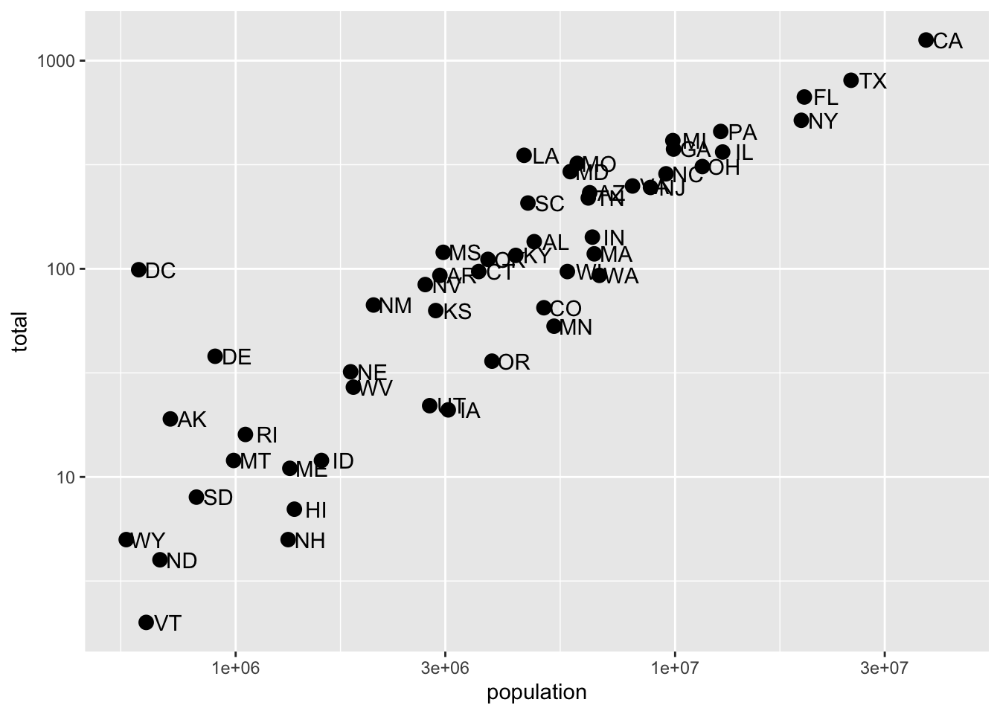
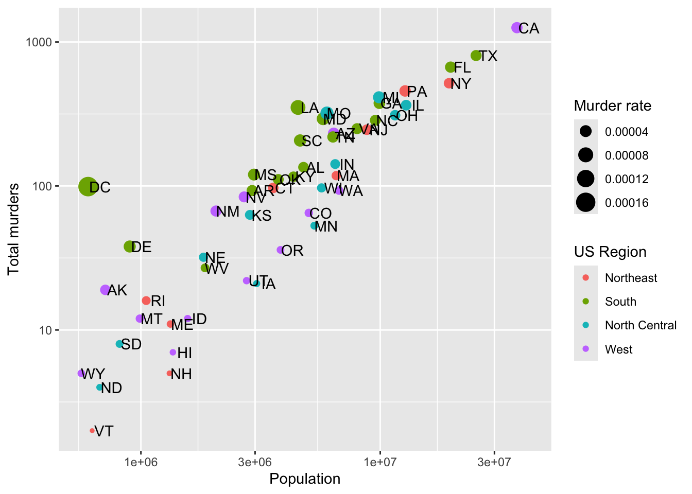
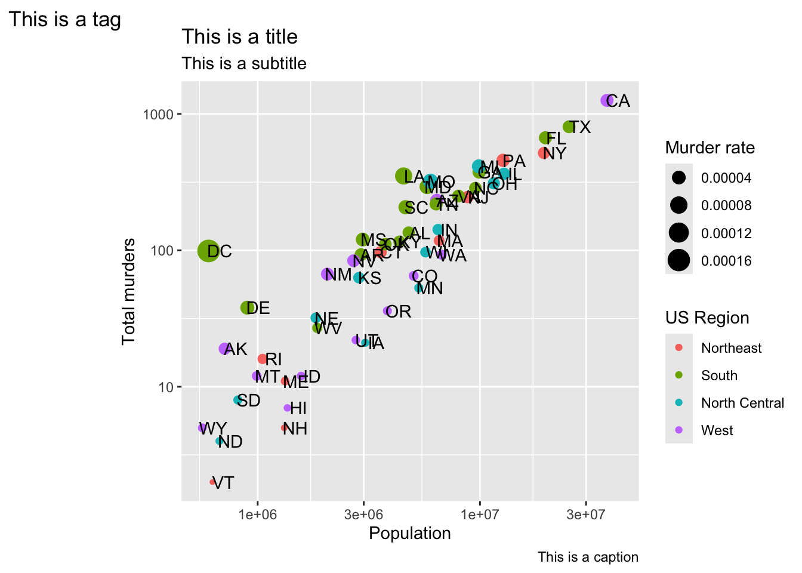
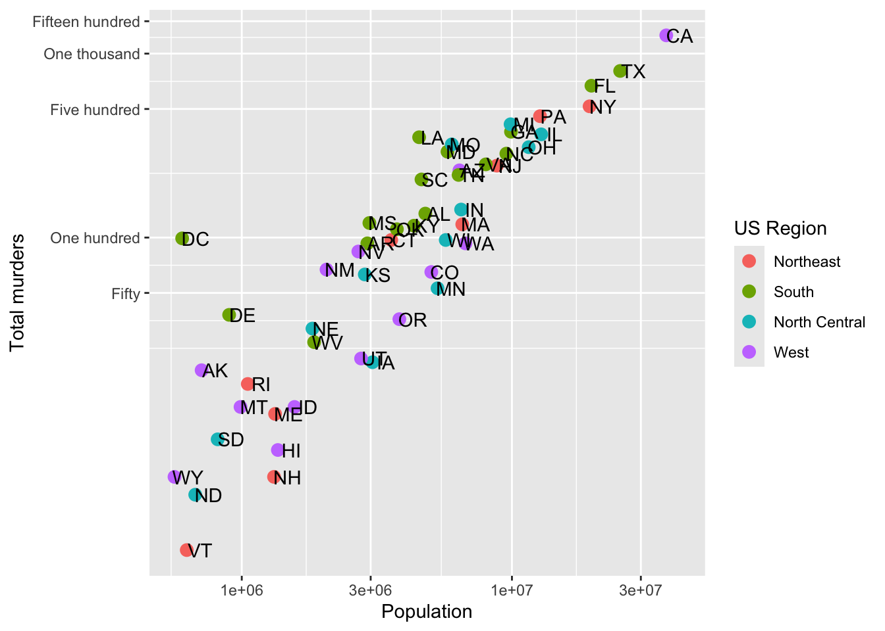
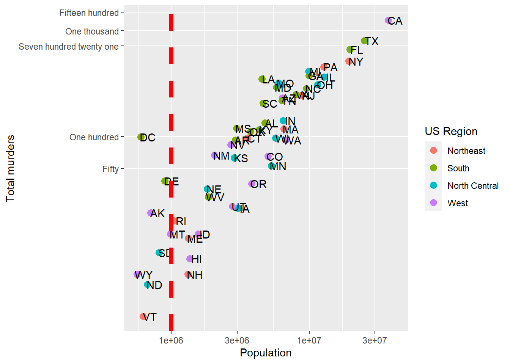
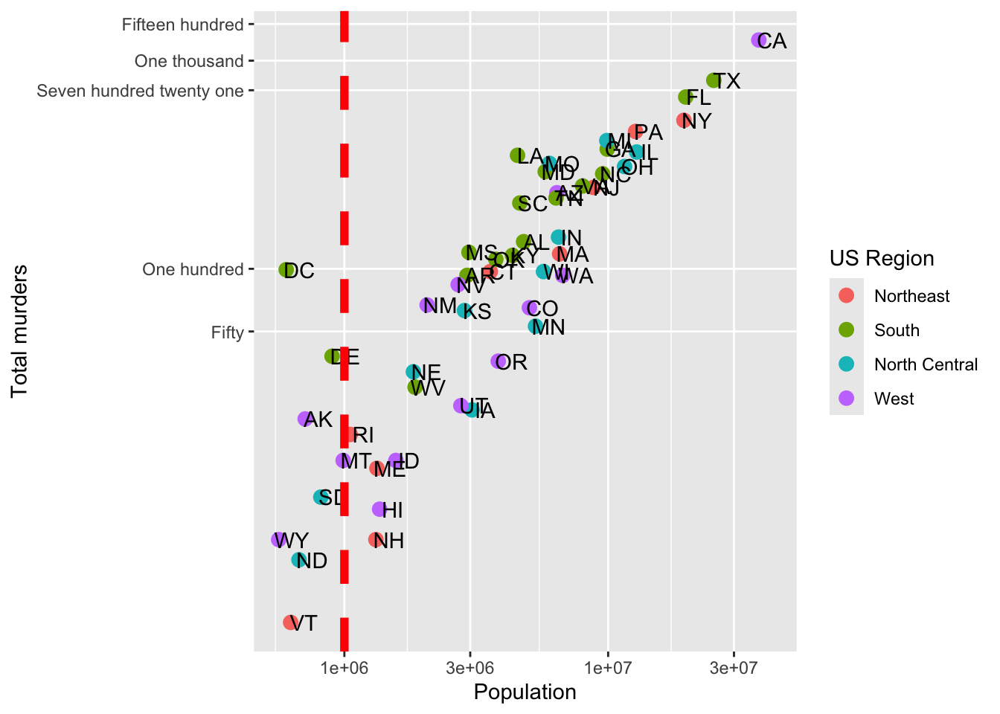
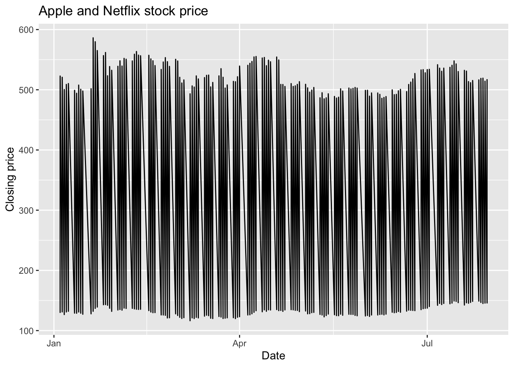
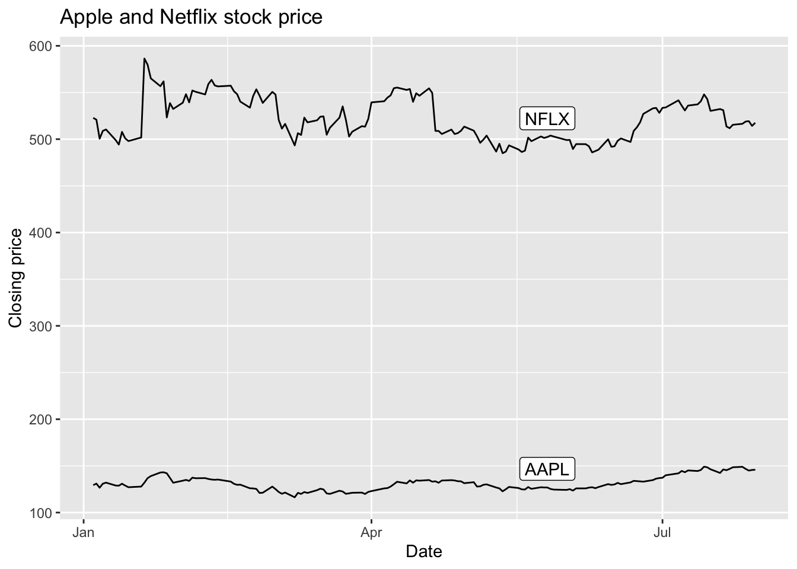
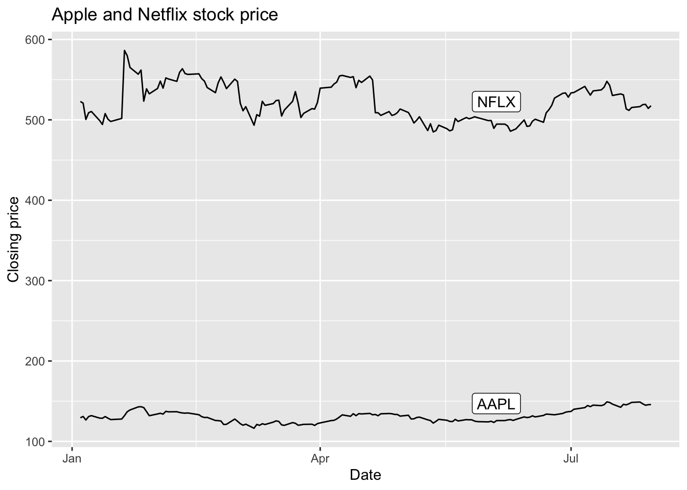

# Load the necessary libraries
library(tidyverse)
electoral_votes <- read.csv("path_to/pres08.csv")
polling_data <- read.csv("path_to/polls08.csv")Visualizations in Practice
Readings
- This page.
Guiding Questions
- Today we’re mostly learning some technical aspects of
ggplot. - Why are we covering the material this way? (Good question. There’s an answer!)
In-Class Activity: Comparing 2008 Electoral Votes and Polling Data.
In this activity, we will use R to visualize and compare the actual electoral votes from the 2008 presidential election with the polling data prior to the election. Specifically, we will explore how accurately the polls predicted the election results. Yes, I know this is an older election… that’s kind of the point. This isn’t a politics class.
Setup:
You’ll need to download two CSV files and put them somewhere on your computer (or upload it to RStudio.cloud if you’ve gone that direction)—preferably in a folder named data in your project folder. You can download the data from the link below:
Steps Prior to Analysis:
- Load the Data
Note that you’ll have to replace path_to with the actual path to the files on your computer.
- Data Preparation
We need to aggregate the polling data to get an average poll result for each state. We will then merge this with the electoral votes data.
# Aggregating polling data
avg_polls <- polling_data %>%
group_by(state) %>%
summarise(Obama_avg = mean(Obama), McCain_avg = mean(McCain))
# Merging with electoral votes data
combined_data <- merge(electoral_votes, avg_polls, by = "state")- Complete Your Analysis
You are tasked with three things:
A: Explore the discrepancies between polls and actual results.
B: Visualize the relationship between the actual results and the poll results. Does this relationship change over time? Or, put another way, were early polls or later polls more accurate?
You might find this pseudo-code helpful:
# Define the regions
regions <- tibble(
region = c('Northeast', 'Midwest', 'South', 'West'),
states = list(
c('CT', 'ME', 'MA', 'NH', 'RI', 'VT', 'NJ', 'NY', 'PA'),
c('IL', 'IN', 'MI', 'OH', 'WI', 'IA', 'KS', 'MN', 'MO', 'NE', 'ND', 'SD'),
c('DE', 'FL', 'GA', 'MD', 'NC', 'SC', 'VA', 'DC', 'WV', 'AL', 'KY', 'MS', 'TN', 'AR', 'LA', 'OK', 'TX'),
c('AZ', 'CO', 'ID', 'MT', 'NV', 'NM', 'UT', 'WY', 'AK', 'CA', 'HI', 'OR', 'WA')
)
)
# Unnest the states to create a mapping dataframe
state_region_mapping <- regions %>%
unnest(states) %>%
rename(state = states)
# Assuming 'polling_data' is your original dataframe
polling_data_with_regions <- left_join(polling_data, state_region_mapping, by = "state")C: Write up your conclusions.
Happy visualizing!
Regularly Scheduled Content
Load up our murders data
library(dslabs)
library(ggplot2)
library(dplyr)
data(murders)
p <- ggplot(data = murders, aes(x = population, y = total, label = abb))Scales and transformations
Log transformations
Last lecture, we re-scaled our population by 10^6 (millions), but still had a lot of variation because some states are tiny and some are huge. Sometimes, we want to have one (or both) of our axes scaled non-linearly. For instance, if we wanted to have our x-axis be in log base 10, then each major tick would represent a factor of 10 over the last. This is not the default, so this change needs to be added through a scales layer. A quick look at the cheat sheet reveals the scale_x_continuous function lets us control the behavior of scales. We use them like this:
p + geom_point(size = 3) +
geom_text(nudge_x = 0.05) +
scale_x_continuous(trans = "log10") +
scale_y_continuous(trans = "log10")
A couple of things here: adding things like scale_x_continuous(...) operates on the whole plot. In some cases, order matters, but it doesn’t here, so we can throw scale_x_continuous anywhere. Because we have altered the whole plot’s scale to be in the log-scale now, the nudge must be made smaller. It is in log-base-10 units. Using ?scale_x_continuous brings us to the help for both scale_x_continuous and scale_y_continuous, which shows us the options for transformations trans = ...
This particular transformation is so common that ggplot2 provides the specialized functions scale_x_log10 and scale_y_log10 which “inherit” (take the place of) the scale_x_continuous functions but have log base 10 as default. We can use these to rewrite the code like this:
p + geom_point(size = 3) +
geom_text(nudge_x = 0.05) +
scale_x_log10() +
scale_y_log10()This can make a plot much easier to read, though one has to be sure to pay attention to the values on the axes. Plotting anything with very large outliers will almost always be better if done in log-scale. Adding the scale layer is an easy way to fix this.
We can also use one of many built-in transformations. Of note: reverse just inverts the scale, which can be helpful, log uses the natural log, sqrt takes the square root (dropping anything with a negative value), reciprocal takes 1/x. If your x-axis is in a date format, you can also scale to hms (hour-minute-second) or date.
Transforming data vs. transforming using scale_...
We could simply take the log of population and log of total in the call and we’d get something very similar. Note that we had to override the aesthetic mapping set in p in each of the geometries:
p + geom_point(aes(x = log(population, base=10), y = log(total, base=10)), size = 3) +
geom_text(aes(x = log(population, base=10), y = log(total, base=10)), nudge_x = 0.05) 
This avoids using scale_x_continuous or it’s child function scale_x_log10. One advantage to using scale_x... is that the axes are correctly labeled. When we transform the data directly, the axis labels only show the transformed values, so 7,000,000 becomes 7.0. This could be confusing! We could update the axis labels to say “total murders (log base 10)” and “total population (log base 10)”, but that’s cumbersome. Using scale_x... is a lot more refined and easy.
Axis labels, legends, and titles
But let’s say we did want to re-name our x-axis label. Or maybe we don’t like that the variable column name is lower-case “p”.
As with many things in ggplot, there are many ways to get the same result. We’ll go over one way of changing titles and labels, but know that there are many more.
Changing axis titles
We’ll use the labs(...) annotation layer to do this, which is pretty straightforward. ?labs shows us what we can change, and while it looks pretty basic, the real meat is in the ... argument, which the help says is “A list of new name-value pairs”. This means we can re-define the label on anything that is an aesthetic mapping. X and Y are aesthetic mappings, so…
p + geom_point(size = 3) +
geom_text(nudge_x = 0.05) +
scale_x_log10() +
scale_y_log10() +
labs(x = 'Population', y = 'Total murders')
Now, let’s use an aesthetic mapping that generates a legend, like color, and see what labs renames:
p + geom_point(aes(color = region), size = 3) +
geom_text(nudge_x = 0.05) +
scale_x_log10() +
scale_y_log10() +
labs(x = 'Population', y = 'Total murders', color = 'US Region')
We can rename the aesthetic mapping-relevant label using labs. Even if there are multiple mapped aesthetics:
p + geom_point(aes(color = region, size = total/population)) +
geom_text(nudge_x = 0.05) +
scale_x_log10() +
scale_y_log10() +
labs(x = 'Population', y = 'Total murders', color = 'US Region', size = 'Murder rate')Titles
In ?labs, we also see some things that look like titles and captions. We can include those:
p + geom_point(aes(color = region, size = total/population)) +
geom_text(nudge_x = 0.05) +
scale_x_log10() +
scale_y_log10() +
labs(x = 'Population', y = 'Total murders', color = 'US Region', size = 'Murder rate',
title = 'This is a title', subtitle = 'This is a subtitle', caption = 'This is a caption', tag = 'This is a tag')
Now that you know how, always label your plots with at least a title and have meaningful axis and legend labels.
Axis ticks
In addition to the axis labels, we may want to format or change the axis tick labels (like “1e+06” above) or even where the tick marks and lines are drawn. If we don’t specify anything, the axis labels and tick marks are drawn as best as ggplot can do, but we can change this. This might be especially useful if our data has some meaningful cutoffs that aren’t found by the default, or we just don’t like where the marks fall or how they are labeled. This is easy to fix with ggplot.
To change the tick mark labels, we have to set the tick mark locations. Then we can set a label for each tick mark. Let’s go back to our murders data and, for simplicity, take the log transformation off the Y axis. We’ll use scale_y_continuous to tell R where to put the breaks (breaks =) and what to label the breaks. We have to give it one label for every break. Let’s say we just want a line at the 500’s and let’s say we want to (absurdly) use written numerics for each of the Y-axis lines. Since scale_y_log10 inherits from scale_y_continuous, we can just use that and add the breaks and labels:
p + geom_point(aes(color = region), size = 3) +
geom_text(nudge_x = .05) +
scale_x_log10() +
scale_y_log10(breaks = c(0,50, 100, 500,1000,1500),
labels = c('Zero','Fifty','One hundred','Five hundred','One thousand','Fifteen hundred')) +
labs(x = 'Population', y = 'Total murders', color = 'US Region')We have manually set both the location and the label for the y-axis. Note that R filled in the in-between “minor” tick lines, but we can take those out. Since we are setting the location of the lines, we can do anything we want:
p + geom_point(aes(color = region), size = 3) +
geom_text(nudge_x = .05) +
scale_x_log10() +
scale_y_log10(breaks = c(0,50, 100, 721, 1000,1500),
labels = c('Zero','Fifty','One hundred','Seven hundred twenty one','One thousand','Fifteen hundred'),
minor_breaks = NULL) +
labs(x = 'Population', y = 'Total murders', color = 'US Region')So we can now define where axis tick lines should lie and how they should be labeled.
Additional geometries
Let’s say we are happy with our axis tick locations, but we want to add a single additional line. Maybe we want to divide at 1,000,000 population (a vertical line at 1,000,000) becuase we think those over 1,000,000 are somehow different, and we want to call attention to the data around that point. As a more general example, if we were to plot, say, car accidents by age, we would maybe want to label age 21, when people can legally purchase alcohol (and subsequently cause car accidents).
This brings us to our first additional geometry beyond geom_point (OK, we used geom_text, but that’s more of an annotation). geom_vline lets us add a single vertical line (without aesthetic mappings). If we look at ?geom_vline we see that it requires ones aesthetic:xintercept. It also takes aesthetics like color and size, and introduces the linetype aesthetic:
p + geom_point(aes(color = region), size = 3) +
geom_text(nudge_x = .05) +
geom_vline(aes(xintercept = 1000000), col = 'red', size = 2, linetype = 2) +
scale_x_log10() +
scale_y_log10(breaks = c(0,50, 100, 721, 1000,1500),
labels = c('Zero','Fifty','One hundred','Seven hundred twenty one','One thousand','Fifteen hundred'),
minor_breaks = NULL) +
labs(x = 'Population', y = 'Total murders', color = 'US Region')Warning: Using `size` aesthetic for lines was deprecated in ggplot2 3.4.0.
ℹ Please use `linewidth` instead.Combining geometries is as easy as adding the layers with +.
geom_line
For a good old line plot, we use the line geometry at geom_line. The help for ?geom_line tells us that we need an x and a y aesthetic (much like geom_points). Since our murders data isn’t really suited to a line graph, we’ll use a daily stock price. We’ll get this using tidyquant, which pulls stock prices from Yahoo Finance and maintains the “tidy” format. You’ll need to install.packages('tidyquant') before you run this the first time.
library(tidyquant)
AAPL = tq_get("AAPL", from = '2009-01-01', to = '2021-08-01', get = 'stock.prices')
head(AAPL)# A tibble: 6 × 8
symbol date open high low close volume adjusted
<chr> <date> <dbl> <dbl> <dbl> <dbl> <dbl> <dbl>
1 AAPL 2009-01-02 3.07 3.25 3.04 3.24 746015200 2.74
2 AAPL 2009-01-05 3.33 3.43 3.31 3.38 1181608400 2.85
3 AAPL 2009-01-06 3.43 3.47 3.30 3.32 1289310400 2.81
4 AAPL 2009-01-07 3.28 3.30 3.22 3.25 753048800 2.74
5 AAPL 2009-01-08 3.23 3.33 3.22 3.31 673500800 2.80
6 AAPL 2009-01-09 3.33 3.34 3.22 3.23 546845600 2.73Now, we can plot a line graph of the Apple closing stock price over the requested date range. We want this to be a time series, so the x-axis will be the date and the y-axis will be the closing price.
ggplot(AAPL, aes(x = date, y = close)) +
geom_line() +
labs(x = 'Date', y = 'Closing price', title = 'Apple stock price')In geom_line, R will automatically sort on the x-variable. If you don’t want this, then geom_path will use whatever order the data is in. Either way, if you have multiple observations for the same value on the x-axis, then you’ll get something pretty messy because R will try to connect, in some order, all the points. Let’s see an example with two stocks:
AAPLNFLX = tq_get(c("AAPL","NFLX"), from = '2021-01-01', to = '2021-08-01', get = 'stock.prices')
ggplot(AAPLNFLX, aes(x = date, y = close)) +
geom_line() +
labs(x = 'Date', y = 'Closing price', title = 'Apple and Netflix stock price')
That looks kinda strange. That’s because, for every date, we have two values - the NFLX and the AAPL value, so each day has a vertical line drawn between the two prices. This is nonsense, especially since what we want to see is the history of NFLX and AAPL over time.
Aesthetics to the rescue! Remember, when we use an aesthetic mapping, we are able to separate out data by things like color or linetype. Let’s use color as the aesthetic here, and map it to the stock ticker:
AAPLNFLX = tq_get(c("AAPL","NFLX"), from = '2021-01-01', to = '2021-08-01', get = 'stock.prices')
ggplot(AAPLNFLX, aes(x = date, y = close, color = symbol)) +
geom_line() +
labs(x = 'Date', y = 'Closing price', title = 'Apple and Netflix stock price')
Well there we go! We can now see each stock price over time, with a convenient legend. Later on, we’ll learn how to change the color palatte. If we don’t necessarily want a different color but we do want to separate the lines, we can use the group aesthetic.
AAPLNFLX = tq_get(c("AAPL","NFLX"), from = '2021-01-01', to = '2021-08-01', get = 'stock.prices')
ggplot(AAPLNFLX, aes(x = date, y = close, group = symbol)) +
geom_line() +
labs(x = 'Date', y = 'Closing price', title = 'Apple and Netflix stock price')Similar result as geom_line, but without the color difference (which makes it rather hard to tell what you’re looking at). But if we add labels using geom_label, we’ll get one label for every point, which will be overwhelming. The solution? Use some filtered data so that there is only one point for each label. But that means replacing the data in ggplot. Here’s how.
Using different data with different geometries
Just as we can use different aesthetic mappings on each geometry, we can use different data entirely. This is useful when we want one geometry to have one set of data (like the stock prices above), but another geometry to only have a subset of the data. Why would we want that? Well, we’d like to label just one part of each of the lines in our plot, right? That means we want to label a subset of the stock data.
To replace data in a geometry, we just need to specify the data = argument separately:
ggplot(AAPLNFLX, aes(x = date, y = close, group = symbol)) +
geom_line() +
geom_label(data = AAPLNFLX %>% group_by(symbol) %>% slice(100),
aes(label = symbol),
nudge_y = 20) +
labs(x = 'Date', y = 'Closing price', title = 'Apple and Netflix stock price')In geom_label, we specified we wanted the 100th observation from each symbol to be the label location. Then, we nudged it up along y by 20 so that it’s clear of the line.
R also has a very useful ggrepel package that gives us geom_label_repel which takes care of the nudging for us, even in complicated situations (lots of points, lines, etc.). It does a decent job here of moving the label to a point where it doesn’t cover a lot of data.
library(ggrepel)
ggplot(AAPLNFLX, aes(x = date, y = close, group = symbol)) +
geom_line() +
geom_label_repel(data = AAPLNFLX %>% group_by(symbol) %>% slice(100),
aes(label = symbol)) +
labs(x = 'Date', y = 'Closing price', title = 'Apple and Netflix stock price')
Now, we don’t lose a lot of space to a legend, and we haven’t had to use color to separate the stock symbols.
Multiple geometries
Since this section is about adding geometries, we can combine points and lines. Since lines connect points, it will look like a giant connect-the-dots.
library(ggrepel)
ggplot(AAPLNFLX, aes(x = date, y = close, group = symbol)) +
geom_line() +
geom_point() +
geom_label_repel(data = AAPLNFLX %>% group_by(symbol) %>% slice(100),
aes(label = symbol)) +
labs(x = 'Date', y = 'Closing price', title = 'Apple and Netflix stock price')
Try it!
TRY IT
Start by loading the dplyr and ggplot2 library as well as the murders and heights data.
library(dplyr)
library(ggplot2)
library(dslabs)
data(heights)
data(murders)- With ggplot2 plots can be saved as objects. For example we can associate a dataset with a plot object like this
p <- ggplot(data = murders)Because data is the first argument we don’t need to spell it out
p <- ggplot(murders)and we can also use the pipe:
p <- murders %>% ggplot()What is class of the object p?
- Remember that to print an object you can use the command
printor simply type the object. Print the objectpdefined in exercise one and describe what you see.
- Nothing happens.
- A blank slate plot.
- A scatterplot.
- A histogram.
Using the pipe
%>%, create an objectpbut this time associated with theheightsdataset instead of themurdersdataset.What is the class of the object
pyou have just created?Now we are going to add a layer and the corresponding aesthetic mappings. For the murders data we plotted total murders versus population sizes. Explore the
murdersdata frame to remind yourself what are the names for these two variables and select the correct answer. Hint: Look at?murders.
stateandabb.total_murdersandpopulation_size.totalandpopulation.murdersandsize.
- To create the scatterplot we add a layer with
geom_point. The aesthetic mappings require us to define the x-axis and y-axis variables, respectively. So the code looks like this:
murders %>% ggplot(aes(x = , y = )) +
geom_point()except we have to define the two variables x and y. Fill this out with the correct variable names.
- Note that if we don’t use argument names, we can obtain the same plot by making sure we enter the variable names in the right order like this:
murders %>% ggplot(aes(population, total)) +
geom_point()Remake the plot but now with total in the x-axis and population in the y-axis.
- If instead of points we want to add text, we can use the
geom_text()orgeom_label()geometries. The following code
murders %>% ggplot(aes(population, total)) + geom_label()will give us the error message: Error: geom_label requires the following missing aesthetics: label
Why is this?
- We need to map a character to each point through the label argument in aes.
- We need to let
geom_labelknow what character to use in the plot. - The
geom_labelgeometry does not require x-axis and y-axis values. geom_labelis not a ggplot2 command.
Rewrite the code above to use abbreviation as the label through
aesChange the color of the labels to blue. How will we do this?
- Adding a column called
bluetomurders. - Because each label needs a different color we map the colors through
aes. - Use the
colorargument inggplot. - Because we want all colors to be blue, we do not need to map colors, just use the color argument in
geom_label.
Rewrite the code above to make the labels blue.
Now suppose we want to use color to represent the different regions. In this case which of the following is most appropriate:
- Adding a column called
colortomurderswith the color we want to use. - Because each label needs a different color we map the colors through the color argument of
aes. - Use the
colorargument inggplot. - Because we want all colors to be blue, we do not need to map colors, just use the color argument in
geom_label.
Rewrite the code above to make the labels’ color be determined by the state’s region.
Now we are going to change the x-axis to a log scale to account for the fact the distribution of population is skewed. Let’s start by defining an object
pholding the plot we have made up to now
p <- murders %>%
ggplot(aes(population, total, label = abb, color = region)) +
geom_label()To change the y-axis to a log scale we learned about the scale_x_log10() function. Add this layer to the object p to change the scale and render the plot.
Repeat the previous exercise but now change both axes to be in the log scale.
Now edit the code above to add the title “Gun murder data” to the plot. Hint: use the
labsfunction or theggtitlefunction.